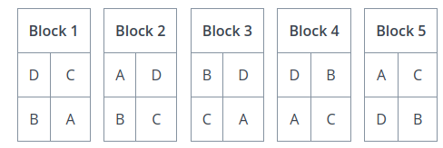

Experimental Design#
The key to eliminating bias and making sound statistical inferences is good experimental design.
Definitions#
- Experimental Unit
The entity (person, object, thing) being observed in an experiment.
- Treatment
The condition applied in an experiment.
- Indicator Variable
An indicator variable is the variable over which the researcher has control.
- Response Variable
A response variable is the variable measured by the researcher.
Note
Indicator variables are sometimes known as either explanatory variables or independent variables.
Response variables are sometimes known as either explicated variables or dependent variables.
- Example
A researcher changes the pH concentration of a solution and measures the temperature at various concentrations.
In this example, the indicator or explanatory variable is the pH contentration. The researcher is able to change the amount of acid or base that is added to the solution. The response variable is the temperature of the solution.
Experiments#
Blind Studies#
The concept of blind studies mainly applies to the areas of psychology and medicine. These sciences deal with human nature and humans are, if nothing else, peculiar creatures. Their expectations can influence the results of the experiment.
In medical studies, the test group will receive the real treatment while the control group will receive a placebo treatment. For example, in testing whether a certain drug treats a medical condition, the control group would receive a sugar pill. Yet it sometimes occurs the control group experiences the effects of the real treatment simply by expecting the effect,

Placebo Effect Video
Click on the image to watch the video.
To minimize the Placebo Effect, single blind and double blind studies are performed.
- Single Blind
In a single blind study, the participant does not know whether he or she is in the control or test group. However, the researcher does know.
- Double Blind
In a double blind study, neither the participant nor the researcher administering the treatment know if the individual is in the control or test group.
Matched Pairs#
A matched pairs design is an experimental design where researchers match pairs of participants by relevant characteristics. Then the researchers randomly assign one person from each pair to the treatment group and the other to the control group. This type of experiment is also known as a matching pairs design.
An ideal example of a matched pairs design would be twins,

If one of the twins is submitted to a treatment, their genetically identical counterpart serves as a nearly perfect control.
Randomized Blocks#
A randomized block experiment should be understood a series of identical experiments, where each block of the population sampled is composed of the same distribution of individuals.
A randomized block design is commonly encountered in agricultural applications. Consider a farmer who wants to test a new type of seed against his usual stock to determine if the yield is higher. In a randomized block experiment, he would break his plots of land into blocks, and then partition each block into segments, call them A, B, C and D,
The type of seed would be planted in the A segment of each block, i.e. the A segment would receive a treatment, while the other segments would be planted with the farmer’s usual stock. Data would then be collected from each block and analyzed in isolation to determine if the new type of seed has any benefits.
In essence, each block represents a separate experiment, where the treated group is tested against the control group.
Randomization#
TODO
Random Digit Tables#
TODO
Pseudo-Random Numbers#
TODO
Data#
Classifications#
The data we collect from an experiment is classified according to several factors.
Dimensionality#
Definition
The dimension of a dataset is the number of values associated with a single observation.
- Univariate
\(\{ x_1, x_2, x_3 \}\)
Univariate data consists of observations that each contain a single value.
- Example
Experimental data from Henri Cavendish’s density of the Earth experiments. Density is expressed as a ratio of the density of water.
Density |
5.5 |
5.61 |
4.88 |
5.07 |
5.26 |
5.55 |
5.36 |
5.29 |
5.58 |
5.65 |
5.57 |
- Bivariate
\(\{ (x_1, y_1), (x_2, y_2), ... , (x_n, y_n)\}\)
Bivariate data consists of observations that each contain two values (i.e. an pair)
- Example
Data from the Challenger space shuttle explosion showing the atmospheric temperature versus the erosion index of the O-ring seal. The failure of the O-ring seal at lower temperatures was not accounted for prior to launch.
Temp |
Erosion |
66.0 |
0.0 |
70.0 |
53.0 |
69.0 |
0.0 |
68.0 |
0.0 |
67.0 |
0.0 |
63.0 |
0.0 |
70.0 |
28.0 |
78.0 |
0.0 |
67.0 |
0.0 |
- Multivariate
\(\{ (x_{1}^1, x_{2}^1, ... , x_{n}^1 ), (x_{1}^2, x_{2}^2, ... , x_{n}^2 ), ... ,(x_{1}^m, x_{2}^m, ... , x_{n}^m )\)
Multivariate data consists of observations that each contain an arbitrary number of values (i.e. a vector)
- Example
Body measurements from a sample of grizzly bears.
AGE |
MONTH |
SEX (1=M) |
HEADLEN |
HEADWDTH |
NECK |
LENGTH |
CHEST |
WEIGHT |
19 |
7 |
1 |
11.0 |
5.5 |
16.0 |
53.0 |
26.0 |
80 |
55 |
7 |
1 |
16.5 |
9.0 |
28.0 |
67.5 |
45.0 |
344 |
81 |
9 |
1 |
15.5 |
8.0 |
31.0 |
72.0 |
54.0 |
416 |
115 |
7 |
1 |
17.0 |
10.0 |
31.5 |
72.0 |
49.0 |
348 |
104 |
8 |
0 |
15.5 |
6.5 |
22.0 |
62.0 |
35.0 |
166 |
Characteristic#
- Definition
The characteristic of a dataset is the type of data being observed.
- Qualitative
\(\{ \text{red}, \text{blue}, \text{yellow} \}\)
Qualitative data are categorical.
- Example
The favorite color of a sample of people.
A group of people’s answer to supporting a new tax reform law.
Movies that feature Kevin Bacon.
Words that appear in a novel.
- Quantitative
Quantitative data are numerical.
These are two types of quantitative data, discrete and continuous.
- Discrete Quantitative
\(\{ 1, 2, 3, 4, 5, ... \}\)
Discrete quantitative data are countable.
- Example
Students in a class.
Petals on a clover
The championships won by a football team.
M&M’s in a bag.
- Continuous Quantitative
\(\{ 1.0, 1.01, 1.001, 1.0001, 1.00001, ... \}\)
Continuous quantitative data are infinitely divisible
- Example
The temperature of a gallon of water under various pressures.
The speed of a train.
The weight of a coin.
The amount of rainfall in a region.
Scale#

- Nominal Level
Unordered, categorical data.
Nominal data is the simplest type of data. A nominal scale or level is a way of labelling and separating individuals in a sample into groups.
- Example
The favorite color of each person in a sample of data.
The political party affiliation of each person in a sample of data.
The nationality of each person in a sample of data.
- Ordinal Level
Ordered, categorical data.
Ordinal data is a step above nominal data. It is categorical, but an order can be imposed on it.
- Example
Answers to a customer satisfaction survey:
DISSATISFIED,NEUTRAL,SATISIFEDGrades on a quiz:
A,B,C,D,E,F.
- Interval Level
Ordered, numerical data.
Interval level is a step above ordinal data. The data are ordered, but now the difference between observations is defined. In other words, with an interval level, the distance between two observation \(x_2\) and \(x_1\) can be defined as \(x_2 - x_1\)
- Example
A historical time series of the Consumer Price Index
The IQs of a random sample of people.
The SAT scores of the graduating class of seniors.
- Ratio Level
Ordered, numerical data.
Ratio level is the final level of data. The data are ordered, the difference between two datapoints can be computed \(x_2 - x_1\) and there is a true zero. With a ratio level, it makes sense to have an observation of 0.
- Example
Measurements from a scale, i.e. the weight of a mass.
Measurements from a thermometer, i.e the temperature of a body.
The amount of rainfall in a region over a period of a week.
Types of Statistics#
- Sample Statistic
A piece of information calculated from sample of data.
Sample statistics are used to summarize the characteristics of a dataset. They are broken down into two main categories.
- Descriptive Statistic
A sample statisic used to visualize and approximate the shape and spread of a population.
- Inferential Statistic
A sample statistic used to make inferences about the population.
One of the most important descriptive statistics is the sample mean,
One of the most important inferential statistics is the Z-score of the sample mean,
If these formulae make no sense yet, don’t worry! That is to be expected. They are listed here, so you can start forming a picture of the things to come. By the end of this class, these two formulae will become your best friends.